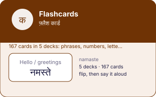

EkGuru › Learn Hindi › Tools › Flashcards
Hindi flashcards
🔊 Tap any speaker button to hear Hindi spoken. Too fast or slow? Use the speed button at the bottom-right of the page.
Five decks, spaced repetition, progress kept in your own browser. No account, no email, no app to install. Cards you find hard come back sooner.
Not started
This tool needs JavaScript. The same words are listed as plain tables on the phrasebook and numbers pages.
Why flashcards work, and where they stop
Spaced repetition is the best-evidenced technique in language learning for one narrow job: getting individual items into long-term memory. It is very good at vocabulary and useless at conversation, because knowing a word in isolation is not the same skill as producing it inside a sentence under time pressure. Use this for the first thousand words, and use a person for everything else.
How to actually use it
- Short sessions, daily. Ten minutes every day beats an hour on Sunday, and it is not close.
- Be honest with Hard and Easy. Marking something Easy because you nearly remembered it is how a deck becomes useless.
- Say the answer aloud before flipping. Recognition and production are different abilities and only one of them is worth having.
Devanagari is easy to get slightly wrong when it is typed by hand — a missing matra, the wrong nukta. If something here looks off to you, trust a native speaker over this page and please tell us so it gets fixed — it takes a moment and a real person reads it. Romanised spellings are a guide to the sound, not a standard: there is no single official way to write Hindi in Latin letters.
Questions
Yes, in your own browser, using localStorage. Nothing is sent anywhere, there is no account and no email. Clear your browser data and it goes — that is the trade for not asking you to sign up.
Cards you get wrong come back sooner; cards you get right are pushed further away. It is a simple spacing rule rather than a full algorithm, and it is enough — the benefit of spaced repetition comes mostly from spacing at all, not from the exact intervals.
Twenty new ones is plenty and ten is fine. The number that matters is not how many you add but whether you come back tomorrow.
Reading gets you the grammar. Speaking is the part that only happens with another human. EkGuru tutors are native Hindi speakers in India who teach one to one over video — no group classes, no subscription.
Find a Hindi Guru Free Hindi guidesNext
Flashcards, in one picture
Every number and every word on this plate is taken from the tool below it, not drawn by hand: what you see here is what the tool holds.
